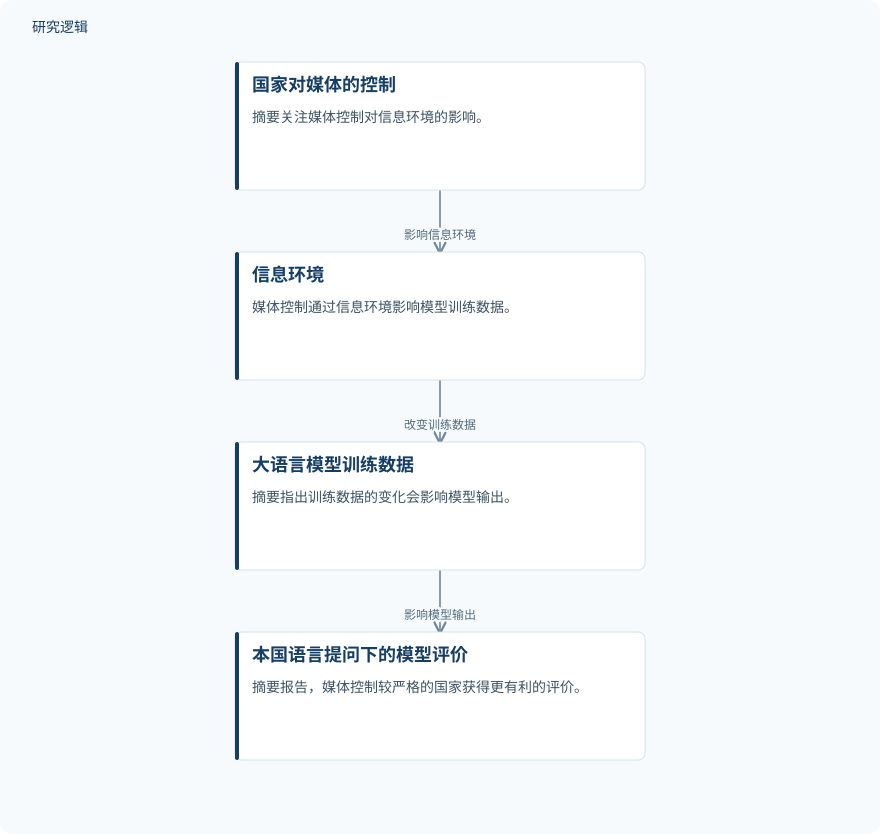

摘要解读
国家媒体管控如何通过训练数据塑造大语言模型行为
State media control shapes LLM behaviour by influencing training data
解读更新 2026-11-15 23:05 · 依据公开摘要整理，未核验全文细节
大语言模型对一个国家的评价，可能不仅取决于提问内容，还受到训练数据所处信息环境的影响。这份摘要关注媒体控制如何影响模型输出，提醒读者留意本国语言回答背后的信息来源。
文章目录
模型评价背后的信息环境
大语言模型的训练数据并非脱离现实的信息集合。摘要指出，国家对媒体的控制会影响信息环境，进而改变模型的训练数据。研究因此将关注点放在模型之外：塑造信息供给的因素，也可能影响模型如何描述和评价国家。
摘要交代了影响链条，但未展开研究方法
摘要明确描述了“媒体控制影响信息环境，信息环境改变训练数据，进而影响模型输出”的关系，并报告了使用相关国家本国语言提问时的评价现象。不过，摘要没有说明如何测量媒体控制、识别训练数据变化或组织模型提问，因此不能据此还原具体实验流程。
依据摘要整理的信息环境影响关系


仅概括摘要明确陈述的影响链条与输出情境，不表示论文的具体实验流程，也不是论文原图。
下载 SVG图示关系说明
实线表示相邻阶段的信息流，虚线表示跨阶段联系或反馈。
国家对媒体的控制 → 信息环境：影响信息环境；信息环境 → 大语言模型训练数据：改变训练数据；大语言模型训练数据 → 本国语言提问下的模型评价：影响模型输出
本国语言回答中的更有利评价
摘要报告，媒体控制对训练数据的影响会明显作用于大语言模型的输出：媒体控制更严格的国家，在以其本国语言提问时，会获得模型更有利的评价。
这一发现将信息环境与模型评价联系起来。需要保留的限定是，摘要突出的是媒体控制较严格国家及本国语言提问这一情境；它没有提供足以概括所有国家、所有语言或所有模型表现的结果。
样本、比较基准与验证范围仍待核对
仅凭摘要，无法判断研究覆盖哪些国家、语言和模型，也无法确认提示词、评价指标、样本规模及训练数据的识别方式。“更有利”的具体比较基准与效应大小同样未在摘要中展开，不能自行补入数值或统计结论。
摘要也不足以判断研究如何区分媒体控制与其他因素的影响，以及结论经过了哪些验证。这些属于当前资料无法回答的问题，不代表论文没有开展相应分析。本解读仅依据所给摘要，不声称已经阅读全文。
阅读启发：关注回答语言，也追问信息来源
阅读启发：理解模型对国家的评价时，可以同时追问“用什么语言提问”与“模型可能接触了怎样的信息环境”。进一步阅读时，值得重点核对语言间的比较方式、评价标准和训练数据证据，而不宜直接将本国语言回答视为更客观或更失真。
以上为本站阅读启发与建议，不是论文已验证的结论。